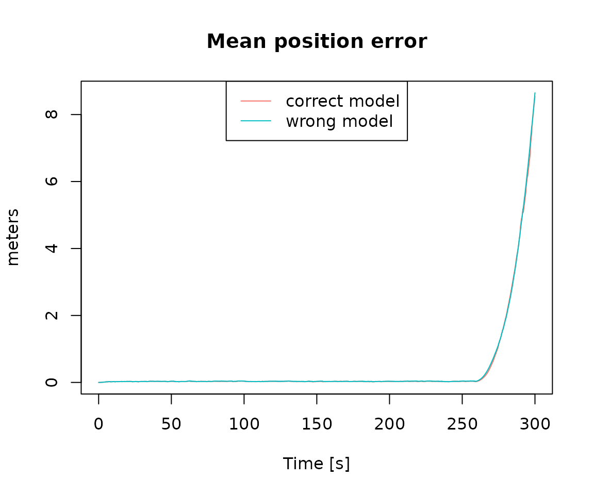
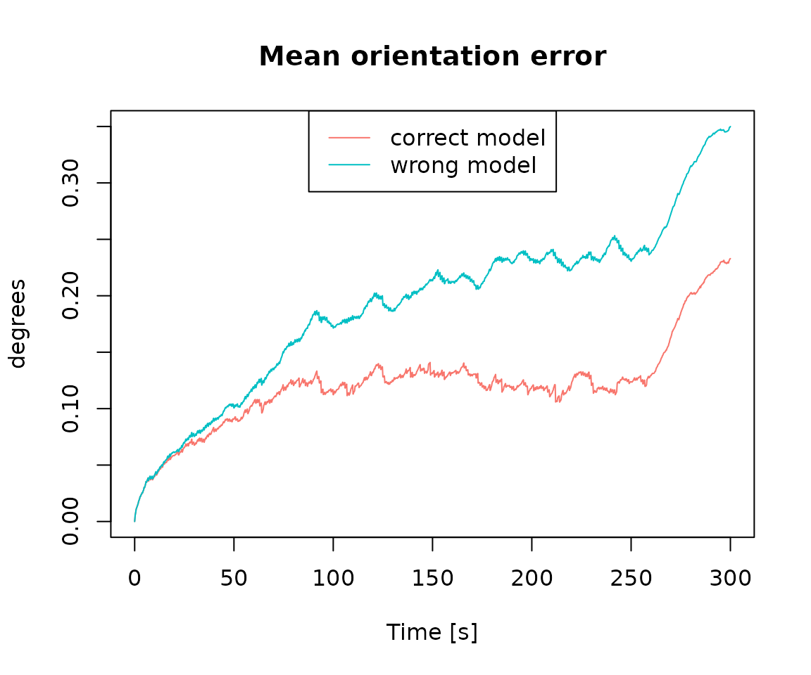
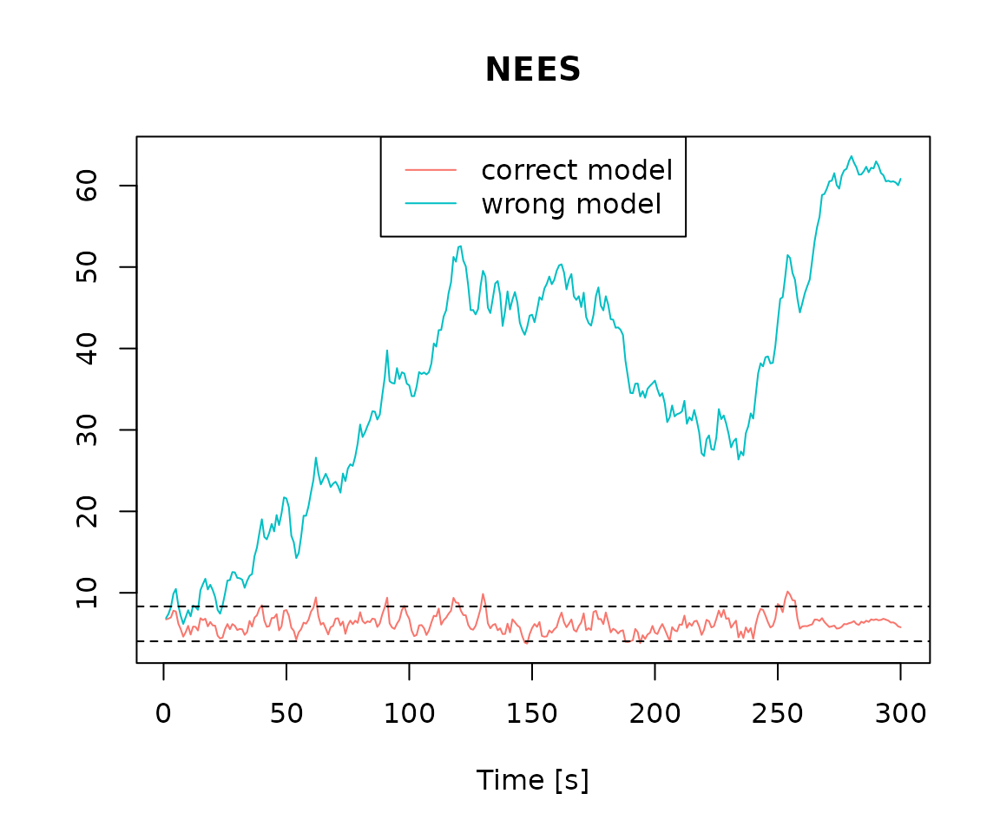
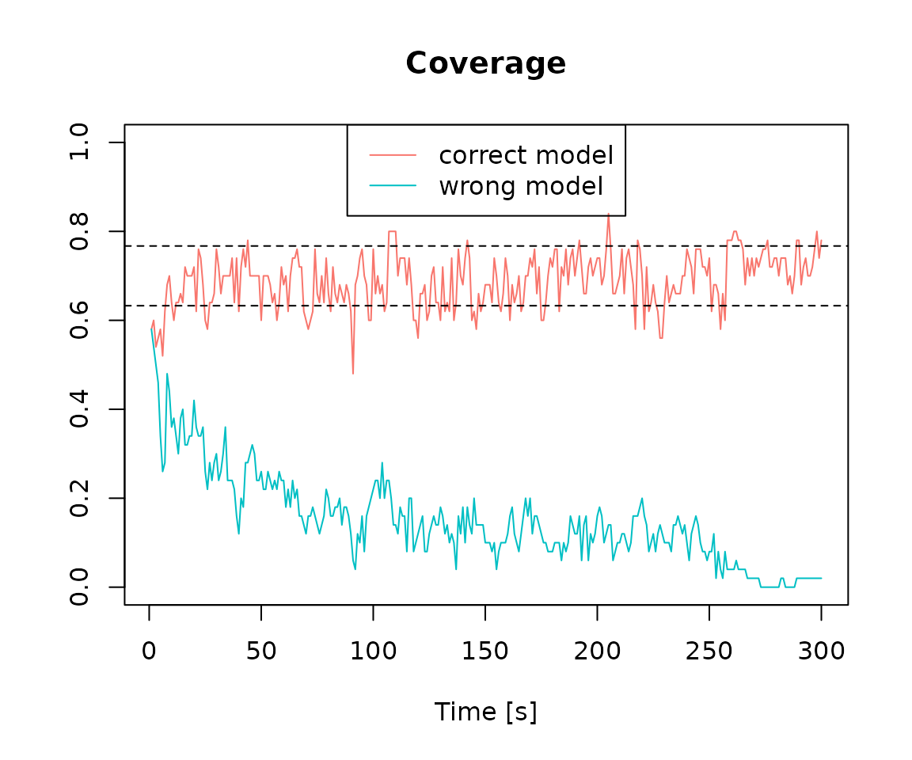

We load the R package navigation
We load the data lemniscate_traj_ned
## t x y z roll pitch_sm yaw
## [1,] 0.00 0.00000000 0.00000000 0 0.0000000000 0.000000e+00 0.7853979
## [2,] 0.01 0.05235987 0.05235984 0 0.0001821107 8.255405e-05 0.7853971
## [3,] 0.02 0.10471968 0.10471945 0 0.0003642249 1.650525e-04 0.7853946
## [4,] 0.03 0.15707937 0.15707860 0 0.0005463461 2.474976e-04 0.7853905
## [5,] 0.04 0.20943890 0.20943706 0 0.0007284778 3.298918e-04 0.7853847
## [6,] 0.05 0.26179819 0.26179460 0 0.0009106235 4.122374e-04 0.7853773We make the trajectory object
traj = make_trajectory(data = lemniscate_traj_ned, system = "ned")
class(traj)## [1] "trajectory"We then define a timing object
timing = make_timing(nav.start = 0, # time at which to begin filtering
nav.end = 300,
freq.imu = 100, # frequency of the IMU, can be slower wrt trajectory frequency
freq.gps = 1, # gnss frequency
freq.baro = 1, # barometer frequency (to disable, put it very low, e.g. 1e-5)
gps.out.start = 260, # to simulate a GNSS outage, set a time before nav.end
gps.out.end = 300)We define the sensor model for generating sensor errors.
snsr.mdl=list()
acc.mdl = WN(sigma2 = 5.989778e-05) + AR1(phi = 9.982454e-01, sigma2 = 1.848297e-10) + AR1(phi = 9.999121e-01, sigma2 = 2.435414e-11) + AR1(phi = 9.999998e-01, sigma2 = 1.026718e-12)
gyr.mdl = WN(sigma2 = 1.503793e-06) + AR1(phi = 9.968999e-01, sigma2 = 2.428980e-11) + AR1(phi = 9.999001e-01, sigma2 = 1.238142e-12)
snsr.mdl$imu = make_sensor(name="imu", frequency=timing$freq.imu, error_model1=acc.mdl, error_model2=gyr.mdl)We define the stochastic model for the GPS errors considering a RTK-like GNSS system
gps.mdl.pos.hor = WN(sigma2 = 0.025^2)
gps.mdl.pos.ver = WN(sigma2 = 0.05^2)
gps.mdl.vel.hor = WN(sigma2 = 0.01^2)
gps.mdl.vel.ver = WN(sigma2 = 0.02^2)
snsr.mdl$gps = make_sensor(name="gps", frequency=timing$freq.gps,
error_model1=gps.mdl.pos.hor,
error_model2=gps.mdl.pos.ver,
error_model3=gps.mdl.vel.hor,
error_model4=gps.mdl.vel.ver)We define the stochastic model for the barometer
baro.mdl = WN(sigma2=0.5^2)
snsr.mdl$baro = make_sensor(name="baro", frequency=timing$freq.baro, error_model1=baro.mdl)We then define the stochastic model for the sensor error, here we configure the EKF to have the same model as for data generation (ideal setup).
KF.mdl = list()
KF.mdl$imu = make_sensor(name="imu", frequency=timing$freq.imu, error_model1=acc.mdl, error_model2=gyr.mdl)
KF.mdl$gps = snsr.mdl$gps
KF.mdl$baro = snsr.mdl$baroWe then define a wrong model with respect to the data generation process (only composed of the white noise part)
wrong_acc.mdl = WN(sigma2 = 5.989778e-05)
wrong_gyr.mdl = WN(sigma2 = 1.503793e-06)
wrong_KF.mdl = list()
wrong_KF.mdl$imu = make_sensor(name="imu", frequency=timing$freq.imu, error_model1=wrong_acc.mdl, error_model2=wrong_gyr.mdl)
wrong_KF.mdl$gps = snsr.mdl$gps
wrong_KF.mdl$baro = snsr.mdl$baroWe perform the navigation Monte Carlo simulation considering the correct stochastic model.
num.runs = 50 # number of Monte-Carlo simulations
res = navigation(traj.ref = traj,
timing = timing,
snsr.mdl = snsr.mdl,
KF.mdl = KF.mdl,
num.runs = num.runs,
noProgressBar = TRUE,
PhiQ_method=2,
parallel.ncores=8,
P_subsampling = timing$freq.imu) # keep one covariance every second## Monte-Carlo runs...We perform the navigation Monte Carlo simulation considering the wrong stochastic model.
wrong_res = navigation(traj.ref = traj,
timing = timing,
snsr.mdl = snsr.mdl,
KF.mdl = wrong_KF.mdl, # < here the model is the wrong one
num.runs = num.runs,
noProgressBar = TRUE,
PhiQ_method=2,
parallel.ncores=8,
P_subsampling = timing$freq.imu) # keep one covariance every second## Monte-Carlo runs...We compute statistics on navigation performance for the navigation simulation that considered the correct stochastic model and for the navigation simulation that considered the wrong stochastic model.
pe_res = compute_mean_position_err(res, step = 25)
pe_wrong_res = compute_mean_position_err(wrong_res, step = 25)
oe_res = compute_mean_orientation_err(res, step = 25)
oe_wrong_res = compute_mean_orientation_err(wrong_res, step = 25)
nees = compute_nees(res, step = timing$freq.imu)
wrong_nees = compute_nees(wrong_res, step = timing$freq.imu)
coverage = compute_coverage(res, alpha = 0.7, step = timing$freq.imu)
wrong_coverage = compute_coverage(wrong_res, alpha = 0.7, step = timing$freq.imu)We compare results



